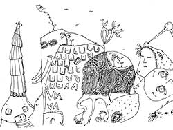

 image: Shantell Martin“I smiled and nodded in an informed and knowledgeable way.”
After a morning of discussion in a conference at the Victoria & Albert Museum,[1] I had to get out of the lecture theatre for some fresh air. I hadn’t really seen that much of the museum, so decided that afternoon to explore.
South Kensington, where the V&A is situated, is a centre of culture and scholarship of great significance. It was a pleasure to be there taking it all in, away from Glasgow, the pressures of work, a small escape from routine, time to think. As I walked towards the building that morning, the autumn leaves lifting high in the cold November wind suggested torn and decaying pages from a calendar of many years ago, each taking me further back, towards an older London when much of this area was established.
That afternoon, in my search around the museum, I discovered the Cast Courts, with some of the finest European sculpture retained in these brilliantly antiquated plaster casts. After a while I became curious about one main piece in the gallery, actually a two-part cast of what is known as Trajan’s Column.[2] The columns are huge, each about 20 metres tall. I couldn’t help asking myself how they got into the museum in the first place.
Another visitor, an American woman, mistaking me for someone who worked in the building, asked me the same question. She seemed to be part of a tourist party who were losing themselves in the vast and impressive space. Sunlight streamed through the arched glass roof, glinting blindingly off their numerous digital camcorders and cameras. I realised the woman was still looking for an answer. I couldn’t help myself. I guess I was irritated by the tourists’ hit and run invasion.
‘The columns were carried here by 2001 Irish labourers in 1900. Miraculously, only two men were injured in the great feat of hoisting the columns into place, one receiving a sprained wrist, the other a slight neck strain caused by turning to assist the man who injured his wrist. These days you wouldn’t be allowed to work men so hard. Bring back the London of old, I say. A magnificent sight though, I’m sure you’ll agree.’
The woman took my answer without question and moved on, though a few hesitant steps later I noticed her looking bemused, trying to process what she’d been told. She moved closer to the objects, where a text panel gave more genuine information, her group now pointing and clicking in every direction, nudging and jostling each other for the best camera angle. I quietly slipped out of sight.
We drifted off on our separate journeys, insignificant among these historical artifacts, each looking for meaning amongst it all. Enjoying the feeling of anonymity, I left the building and walked off in the direction of South Kensington underground, kicking leaves into another time, disappearing into the remainder of the crowd-filled day.
referenced works
- The Victoria & Albert Museum is Britain’s biggest museum of art and design. Its name was changed from the South Kensington Museum to the Victoria & Albert Museum in 1899, when, in her final public appearance before her death in 1901, Queen Victoria laid a symbolic foundation stone to the left of the entrance. Incidentally, the much-bandied-about legend that female homosexuality was never outlawed in Britain because Queen Victoria didn’t believe it existed is not true. ↩
- The original Trajan’s Column still stands in Trajan’s Forum in Rome. It is a monument to its namesake, the Roman emperor Trajan, and commemorates his victory in the Dacian Wars in the first decade of the second century AD. Canadian stamp and coin collectors may be surprised and delighted to know that emperor Trajan lends his name to their hobby’s most prominent nationwide stamp and coin collecting publication, but it cannot be guaranteed that Mr. Trajan would be equally delighted in return. ↩
location information
- Name: the Victoria and Albert Museum
- Address: Cromwell Road, London SW7 2RL
- Time of story: Afternoon
- Latitude: 51.497175428775996
- Longitude: -0.17251968383789062
- Map: Google Maps
020 “There’s not going to be enough pavement to go around.”
019 “Then our eyes flicked back together again, and a tear was gathering on her cheek.”
018 “One of them shot me 'die hippy' neon rays from under his star-shaped glasses.”
017 “I often wonder how many of those photographs I have popped up on.”
016 “'Thank you, London!' cries possibly-famous scruffy lead singer.”
015 “Around us, drivers beep their horns and pedestrians trample on my clean jumpers and skirts.”
014 “No chance for bloomers and wigs to outnumber tracksuits - we were on our own.”
013 “Then the unthinkable had happened. We met and became ‘friends’.”
012 “Nothing is forever, to live is to suffer, please give generously.”
011 “The taste is salt water, and the rubbery texture never-ending.”
010 “I pressed the side of my hand to my forehead, pointlessly.”
009 “His voice falters, but refuses to capsize.”
008 “A hollow understanding of togetherness wrapped around everyone.”
007 “In amongst the railway arches and Victorian masonry, the dead spaces remain intact.”
006 “A big scruffy bloke began watching.”
005 “Why did I feel so warm and fuzzy inside?”
004 “I smiled and nodded in an informed and knowledgeable way.”
003 “Bobo-the-hobo, swag, mighty mezz. It's all there right in front.”
002 “To my shame, I realise I am crying.”
001 “Her skirt snaps in the wind like a flag.”

Write for Us!
We’re looking for short narratives describing pivotal moments of elation, confusion, absurdity, love or grief — or anything in between — inseparably tied to a specific place in London.
London:
Or receive updates by email
Addresses only used for the occasional hitotoki mailing. Will not be traded for kebabs or Special Brew.
A list of all available RSS feeds is on the about page.
commentary